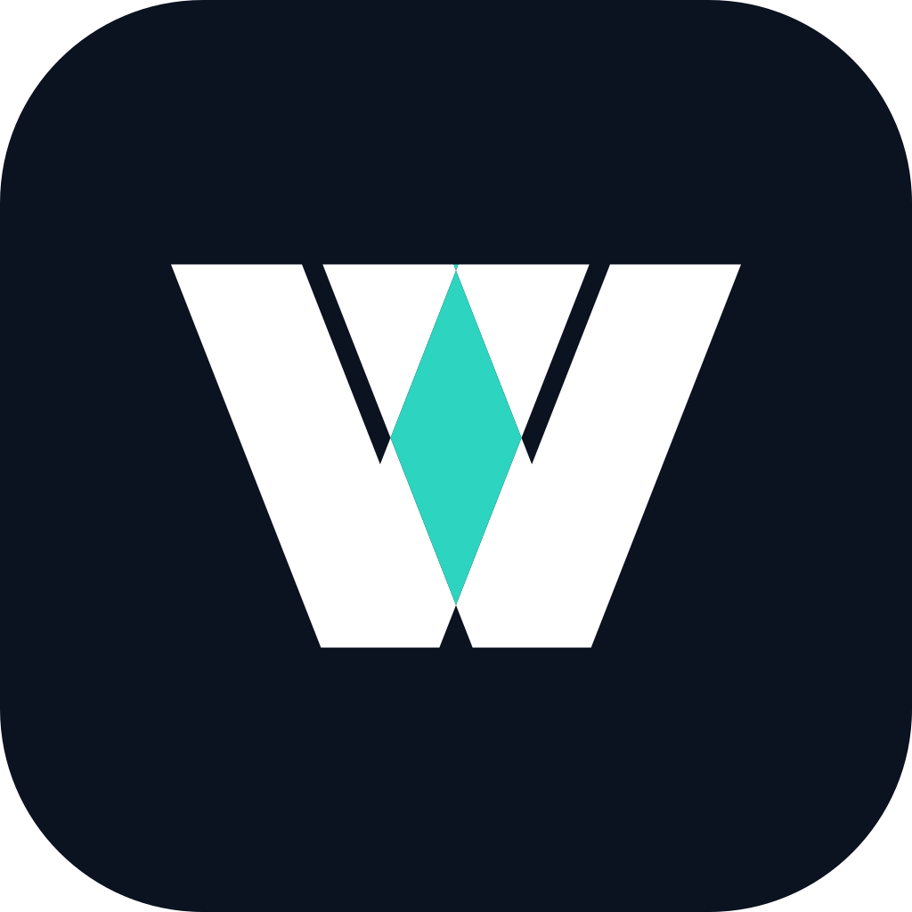
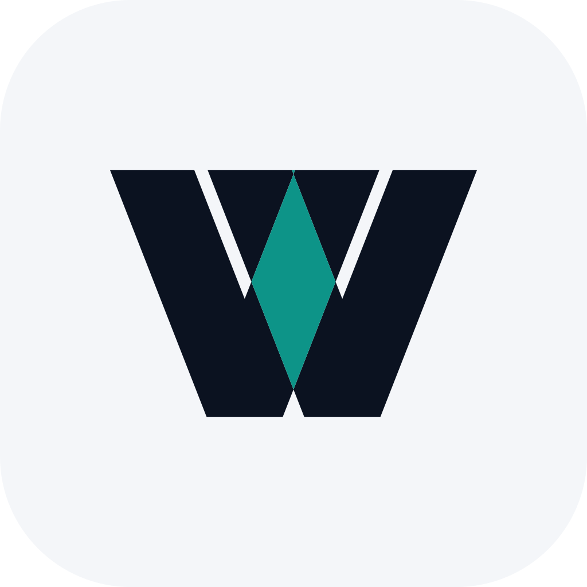

Het idee

Twee V-vormen schuiven in elkaar. Waar ze elkaar kruisen ontstaat een ruit: twee stappen die samenkomen in één werkstroom. Eén vorm, één accent. Het symbool zegt niets over een branche en hoeft niet uitgelegd te worden om te werken.
Werkly brengt het werk van aanvraag tot opdracht in één werkstroom. Het merk is rustig, precies en bedoeld om te blijven.
Twee V-vormen schuiven in elkaar. Waar ze elkaar kruisen ontstaat een ruit: twee stappen die samenkomen in één werkstroom. Eén vorm, één accent. Het symbool zegt niets over een branche en hoeft niet uitgelegd te worden om te werken.
Symbool Woordmerk
WoordmerkIn de monochrome versies blijft de ruit open als negatieve ruimte, zodat het merk ook zonder kleur herkenbaar blijft. Er is nergens een verloop nodig.
Browsertabblad


Het icoon heeft dikkere armen dan het symbool, zodat het op 16 pixels niet dichtloopt.

Eén accentkleur, bewust spaarzaam. Teal is gekozen boven blauw omdat het minder op een bank of verzekeraar lijkt en goed leesbaar blijft op donker.
Van aanvraag naar opdracht.
Het woordmerk is gebaseerd op Geist (SIL Open Font License), licht verzwaard tot ongeveer semibold. Geist is ook het lettertype van de app, dus merk en product spreken dezelfde taal. Voor lopende tekst gebruiken we Geist Regular met een regelhoogte van 1,5.
Nog niet gedaan: een eigen aanpassing aan één letter. Daarmee wordt het woordmerk echt van Werkly. Dat is werk voor een letterontwerper en hoort bij de definitieve versie.